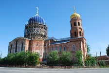
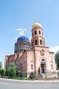
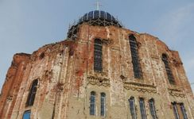
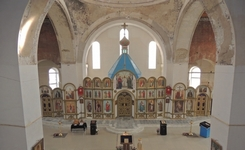
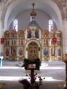
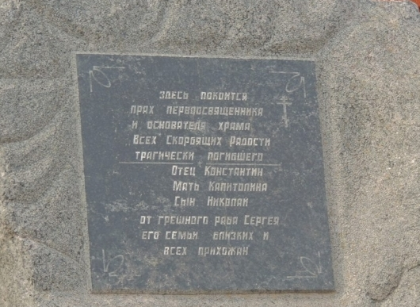

В самом центре рабочего посёлка Городище стоит Храм Богородицы «Всех скорбящих Радость», который виден не только с любого места посёлка, но и всеми проезжающими мимо по московской трассе М6 "Каспий". Храм является единственным храмом Волгоградской области выдержанным в византийском стиле с элементами древнерусского зодчества. Это интересная религиозная достопримечательность как Городищенского района, так и всей области, которую Вы можете посетить, путешествуя по Волгоградской области.

Храм Богородицы Всех скорбящих Радость
Описание
История создания
Своим появлением поселок Городище обязан переселенцам из Тамбовской губернии, в 1827 году основавшим здесь село Красный Колодец. К середине XIX века в Городищенском поселении решено было выстроить вместо молитвенного дома большой храм. На средства купца Бабаева в 1840 году из Царицына была выписана рубленая церковь Иконы Пресвятой Богородицы «Всех скорбящих радость». В 1898 году настоятелем храма стал отец Константин Хитров. Именно благодаря ему в 1905 году вместо деревянной церкви здесь начали строить единственный в области каменный храм в византийском стиле с элементами древнерусского зодчества. Но увидеть плоды своих трудов отцу Константину не удалось. В 1906 году настоятель и его семья – супруга и сын - были зверски убиты разбойниками. Сегодня на месте гибели священника установлен памятный камень. Работы по возведению церкви были закончены в 1914 году.
История храма в советский период
Богослужения велись в храме до 30-х годов ХХ века. Дальнейшая судьба церкви развивалась в точном соответствии с поворотами российской истории. С колокольни были сняты колокола, арестован священник. Было принято решение о закрытии церкви и использовании её под культурное учреждение. В годы Великой Отечественной войны в здании храма располагалась сначала последняя перед вступлением в Сталинград ставка командующего 6-й армии Вермахта фельдмаршала Паулюса, а затем немецкий военный госпиталь. Рядом с храмом, немцы хоронили своих погибших в боях и умерших от ран солдат и офицеров. Точное количество погребенных немцев сегодня установить уже невозможно. В мирное время в храме снова открыли клуб и библиотеку. А когда случился пожар, в подвале стали принимать стеклотару, само же здание стояло пустым и разорённым.
Современная история Храма
В 1990 году в Городище вновь образовался православный Приход Богородицы «Всех скорбящих Радость» и храм был возвращён верующим. С этого времени началось его восстановление. Внутри храма построен иконостас с сенью над престолом, начала работать благотворительная трапезная, открыта воскресная школа с детским хором «Звонцы», возведено здание крестильной, установлена металлическая изгородь на всю территорию, прилегающую к храму, установлены купола, а на отреставрированной колокольне установлены восемь колоколов. На них изображены лики святых. Восстановительные работы ведут и сегодня.
Фотографии
     
Расположение
 )
)
Расположение Храма Богородицы "Всех скорбящих Радость" на интерактивной карте
Храм Богородицы "Всех скорбящих Радость" находится в центре поселка городского типа Городище.
Как при движении с московского направления, так и при движении со стороны Волгограда, Вам необходимо свернуть по указателям в Городище, проехать около 2 километров, двигаясь по главной дороге.
В итоге Вы окажитесь на центральной площади поселения - площади "Павших Борцов", напротив которой и находится храм.
Дополнительная информация
На площади "Павших Борцов" п.г.т. Городище находятся продуктовые сетевые магазины. В пределах 100 метров от площади также находится продуктовый и вещевой рынки, отделение почты и аптека.